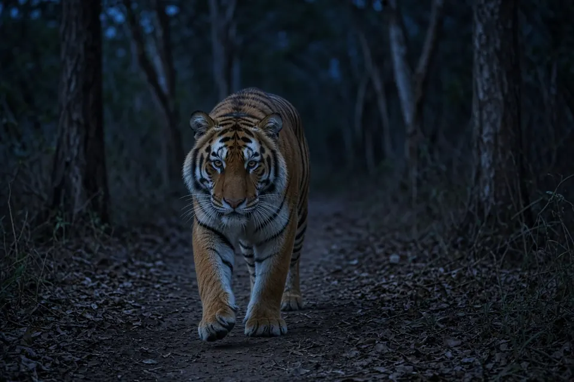

Home › Blog › Are tigers nocturnal?
Are tigers nocturnal? When tigers are most active, according to camera trap studies
Mostly, but not strictly. Wild tigers do most of their moving and hunting at night and around dawn and dusk, and they are best described as nocturnal to crepuscular rather than strictly nocturnal. Camera trap and radio tracking studies show that a tiger's schedule bends to two things: when its prey is active, and when people are around. In Nepal, tigers shared the very same trails as people and vehicles but became much less active during the day, when human traffic peaked.
The short answer
- Usual pattern: most activity at night and in the twilight hours of dawn and dusk; much of the hot daytime is spent resting in cover.
- Not a fixed rule: tigers can and do move and hunt by day, especially where they are undisturbed.
- Prey sets the clock: in Sumatra, tiger activity overlapped strongly with muntjac and sambar deer, two of its prey species.
- People push tigers into the night: around Chitwan National Park, Nepal, tigers cut back daytime activity where human activity peaked by day.
For the basics on size, range and diet, see our tiger facts page and what tigers eat.
How scientists know when tigers are active
Tigers are rare, wary and live in dense forest, so researchers rarely watch them directly. Two tools do most of the work. Camera traps, automatic cameras triggered by movement, stamp every photo with a time, so thousands of photos add up to a 24 hour activity profile. Radio collars let researchers track how far and when an individual moves. Comparing the activity curves of tigers, their prey and people shows who is active at the same time, a measure called temporal overlap.
The Smithsonian's National Zoo describes Sumatran tigers as hunting primarily at night, using sight and sound to find prey. The field studies below show why that is a tendency rather than a law.

Tigers follow their prey's schedule
In 2011, Matthew Linkie and Martin Ridout published a study in the Journal of Zoology on the critically endangered Sumatran tiger. They used 126 camera traps, running for a combined 8,984 camera days across four study areas from disturbed lowland forest to primary submontane forest, to compare the daily activity of tigers with five presumed prey species.
- They described the tiger as crepuscular, most active around dawn and dusk.
- Tiger activity overlapped strongly with red muntjac (overlap coefficient about 0.80 on a scale from 0, no overlap, to 1, complete overlap) and with sambar deer (about 0.81).
- Overlap with the largest prey available, the mostly nocturnal Malayan tapir, was much lower (about 0.52). The authors suggest tapir is not a principal prey species there, even though foraging theory might predict a big cat would favour the biggest prey.
An earlier radio tracking and scat study in Nagarahole, southern India, by K. Ullas Karanth and Melvin Sunquist (2000) reached a similar conclusion from a different angle. Tracking tigers, leopards and dholes between 1986 and 1992, they found that the activity patterns of the predators appeared to be related mainly to the activity of their principal prey, rather than to avoiding one another. They found no temporal separation of predatory activity between tigers and leopards in that forest. For how tigers space themselves across the land, see how big is a tiger's territory?
Tigers shift to the night around people
The clearest evidence of flexibility comes from Nepal. In a 2012 study in the Proceedings of the National Academy of Sciences, Neil Carter and colleagues ran field cameras inside and outside Chitwan National Park in 2010 and 2011. People on foot and vehicles were everywhere in the study area, yet tiger density was also high.
- Even at the level of individual camera locations, tigers used the same places as people on foot and vehicles in both years.
- Tigers offset their activity, becoming much less active during the day, when human activity peaked.
- The authors suggest that abundant prey and low levels of poaching also helped tigers and people coexist.
This matters for conservation. A common belief is that large carnivores cannot share space with people at fine scales. The Chitwan results suggest tigers can share space if they can share it in time, using the night for the trails people use by day. That flexibility has limits: it depends on enough prey and little poaching.
What this means for tiger watching and safety
Because activity peaks around dawn and dusk, wildlife safaris in tiger reserves often schedule drives for early morning and late afternoon. The same pattern is a reason people living near tiger forests are advised to be most careful at those hours. Tigers in zoos keep a different routine shaped by feeding times and keepers, so a sleepy zoo tiger at midday says little about wild behaviour. Our tiger enclosure safety guide covers zoo safety.
What these studies do not prove
Each study covered particular places and years. Activity can differ with season, habitat, prey community and human pressure, so no single curve describes every tiger. Camera traps also record when tigers pass cameras on trails, which is a good but imperfect stand in for overall activity. For how tigers compare with other big cats in behaviour, see big cat behavior.
Key takeaways
- Wild tigers are mainly nocturnal and crepuscular, not strictly nocturnal.
- In Sumatra, tiger activity closely matched muntjac and sambar deer.
- In southern India, predator activity tracked principal prey more than avoidance of other predators.
- Near Chitwan, Nepal, tigers used the same trails as people but avoided the daytime human peak.
Frequently asked questions
Are tigers nocturnal?
Mostly. Wild tigers are most active at night and around dawn and dusk, but they are not strictly nocturnal and can be active by day, especially where people are scarce.
What time of day are tigers most active?
Usually around dawn, dusk and at night. A camera trap study of Sumatran tigers described them as crepuscular, with activity closely matching muntjac and sambar deer.
Do tigers hunt during the day?
Sometimes. Activity tends to follow the prey's schedule, so tigers may hunt in daylight where prey is active and disturbance is low.
Why are tigers more nocturnal near people?
In Nepal's Chitwan region, tigers used the same trails as people and vehicles but were much less active during the day, when human activity peaked (Carter et al. 2012).
Cite this page
APA: BigCatWise. (2026, October 18). Are tigers nocturnal?. Joshua Israel Ventures LLC. https://bigcatwise.com/blog/are-tigers-nocturnal.html
MLA: "Are tigers nocturnal?." BigCatWise, Joshua Israel Ventures LLC, 18 Oct. 2026, bigcatwise.com/blog/are-tigers-nocturnal.html.
Chicago: BigCatWise. "Are tigers nocturnal?." Joshua Israel Ventures LLC. Last modified October 18, 2026. https://bigcatwise.com/blog/are-tigers-nocturnal.html.
Please check the date you accessed the page and adjust to your teacher's or journal's style guide.
Sources
- Linkie and Ridout (2011) Assessing tiger-prey interactions in Sumatran rainforests, Journal of Zoology 284(3): 224-229. DOI 10.1111/j.1469-7998.2011.00801.x
- Carter, Shrestha, Karki, Pradhan and Liu (2012) Coexistence between wildlife and humans at fine spatial scales, Proceedings of the National Academy of Sciences 109(38): 15360-15365. DOI 10.1073/pnas.1210490109
- Karanth and Sunquist (2000) Behavioural correlates of predation by tiger (Panthera tigris), leopard (Panthera pardus) and dhole (Cuon alpinus) in Nagarahole, India, Journal of Zoology 250(2): 255-265. DOI 10.1111/j.1469-7998.2000.tb01076.x
- Smithsonian's National Zoo and Conservation Biology Institute: Sumatran tiger
- IUCN SSC Cat Specialist Group: Tiger
Figures are rounded summaries of the sources above. Wild populations are hard to count, so estimates change as new surveys are published.